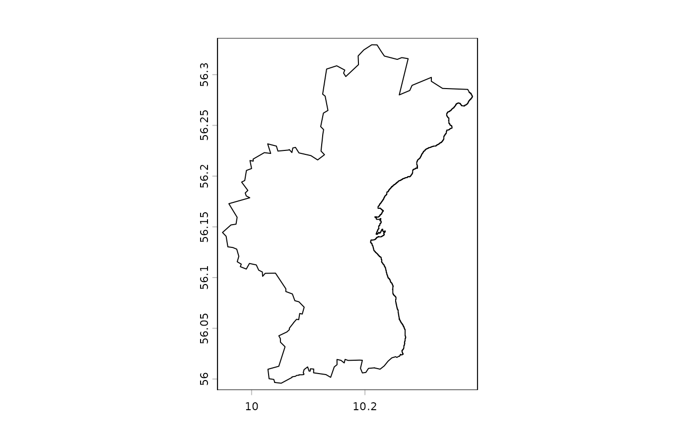
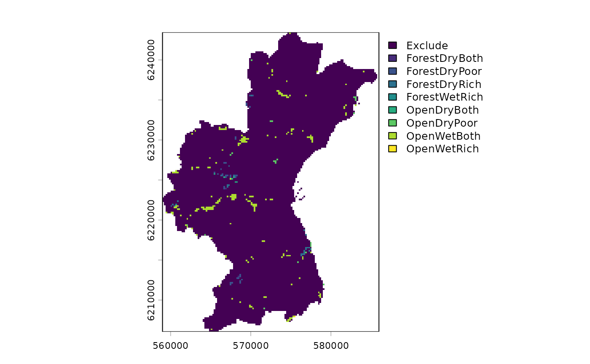
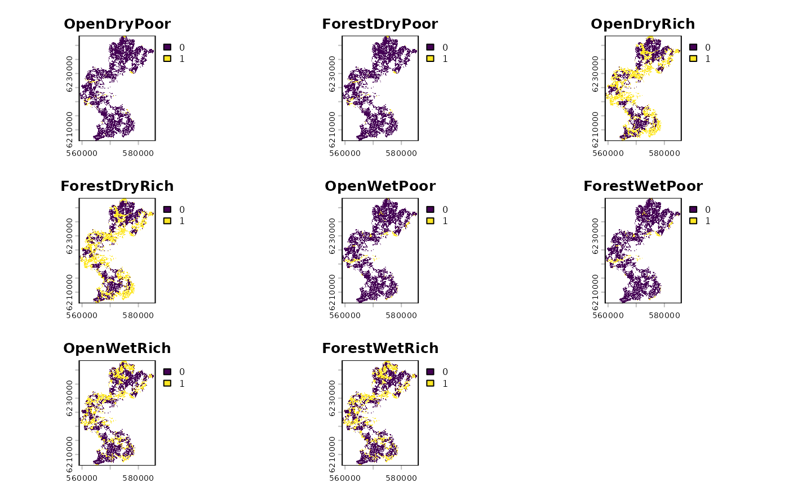

SpeciesPoolR

The goal of the SpeciesPoolR package is to generate potential species pools and their summary metrics in a spatial way. You can install the package directly from GitHub:
#install.packages("remotes")
remotes::install_github("derek-corcoran-barrios/SpeciesPoolR")No you can load the package
library(SpeciesPoolR)
#> Warning: replacing previous import 'data.table::between' by 'dplyr::between'
#> when loading 'SpeciesPoolR'Motivation for the pacakge
Rare species are common and important
In ecological research, the debate on whether rare species outnumber common species within communities is pivotal for understanding biodiversity and guiding conservation efforts. Numerous studies have shown that rare species typically dominate large ecological assemblages, although common species often exert a more substantial influence on overall species richness patterns (Magurran and Henderson 2003; Bregović et al. 2019; Schalkwyk et al. 2019). This complexity underscores the need for innovative approaches in studying biodiversity, particularly since rare species are challenging to model using traditional Species Distribution Models (SDMs) due to their low occurrence rates (Boyd et al. 2022).
Given the limitations of SDMs in capturing the dynamics of rare species, it is essential to develop alternative methods for integrating these species into biodiversity assessments and conservation planning. Although rare species contribute uniquely to functional diversity and ecosystem stability, especially in specific habitats (Chapman et al. 2018; Säterberg et al. 2019), their elusiveness in ecological models presents a significant challenge. The question of the minimum number of presence records required for reliable SDMs is crucial. Research has shown that while as few as 10-15 presence observations can produce nonrandom models for some species (Støa et al. 2019), others require higher thresholds—ranging from 14 to 25 records depending on the species’ prevalence and geographic range (Proosdij et al. 2016; Sampaio and Cavalcante 2023). These findings suggest that even sparse datasets can be useful, but the threshold varies significantly depending on species traits and habitat characteristics. Therefore, researchers must explore novel analytical frameworks and conservation strategies that better accommodate the ecological importance of rare species, thereby enhancing our ability to manage and preserve biodiversity effectively (Reddin et al. 2015).
In highly degraded habitats, such as Denmark, where over 60% of the land is dominated by agriculture and less than 10% remains as natural habitat, traditional SDMs may face further limitations. The scarcity of natural habitats means that presence records are often skewed towards human-modified landscapes, complicating the modeling of species’ ecological preferences. In such contexts, where the majority of occurrences may not reflect the species’ natural behaviors or habitat use, relying on complex SDMs could lead to misleading predictions. Instead, simpler algorithms that incorporate basic dispersal mechanisms and habitat filtering might be more effective. By reducing assumptions about habitat preferences, these methods can provide a more realistic framework for conservation planning, particularly when dealing with the restoration of agricultural lands into natural habitats.
For rare species, and indeed for many others, this approach may offer a more practical solution in scenarios where detailed ecological data is sparse or unreliable. Studies have suggested that in such landscapes, simplistic models that prioritize dispersal and broad habitat suitability over intricate ecological niches can better capture species’ potential distributions and their responses to environmental changes (Guisan et al. 2006; Thuiller et al. 2005), an example to this approach would be range bagging (Drake 2015). This pragmatic approach is especially pertinent when planning conservation actions in areas where habitat degradation has left little intact nature, and it ensures that even under data constraints, effective biodiversity management can still be pursued.
Required Data Files
To effectively execute the SpeciesPoolR workflow, a set
of essential data files must be provided. These files contain the
necessary spatial and taxonomic information that underpin the various
analytical steps in the package. Below, we detail each required file and
its role within the workflow.
Species List File
File Type: CSV or Excel file
Description: The species list file serves as the foundational dataset, comprising the species of interest for your analysis. At a minimum, this file must include a column for the scientific names of species (
Species). Additional taxonomic columns, such asKingdom,Class, andFamily, may also be included to facilitate filtering and subgroup analyses.
An example of this file is provided within the package and can be accessed using the following code:
exampleSpecies <- system.file("ex/Species_List.csv", package="SpeciesPoolR")
print(exampleSpecies)
#> [1] "/home/runner/work/_temp/Library/SpeciesPoolR/ex/Species_List.csv"This dataset is further discussed in the section on Reading and Filtering Data, with a filtered subset displayed in Table @ref(tab:tablespecies).
Shapefile
File Type: Shapefile (.shp)
Description: The shapefile delineates the geographic area of interest, which can range from a broad region, such as a country, to a more specific locality, such as a nature reserve. This file is utilized to spatially constrain species occurrences, ensuring that only those within the defined boundaries are included in the analysis.
If a shapefile is unavailable, a two-letter country code (e.g., “DK” for Denmark) may be provided as an alternative to specify the area of interest.
An example shapefile is included in the package and can be accessed as follows:
shp <- system.file("ex/Aarhus.shp", package="SpeciesPoolR")
print(shp)
#> [1] "/home/runner/work/_temp/Library/SpeciesPoolR/ex/Aarhus.shp"The shapefile’s application is illustrated in the section on Counting Species Presences, where it is used to delineate the boundaries of Aarhus commune, as shown in Figure @ref(fig:plotshapefile).

Outline of the comune of Aarhus
Raster Template File
File Type: Raster file (e.g., .tif)
Description: The raster template file is employed as a spatial reference for rasterizing species presence buffers. It must cover the entire area of interest and possess a resolution appropriate for the intended analysis. This template ensures consistent spatial alignment across all raster-based operations.
You can explore an example of this file using the following code:
template <- system.file("ex/LU_Aarhus.tif", package="SpeciesPoolR")
print(template)
#> [1] "/home/runner/work/_temp/Library/SpeciesPoolR/ex/LU_Aarhus.tif"The raster template’s role in buffer creation is further explained in the section on Creating Buffers Around Species Presences, with an example shown in Figure @ref(fig:plottemplate).

Raster of the Aarhus comune, the package will use Non NA cells as part of the template
Land-Use Raster File
File Type: Raster file (e.g., .tif)
Description: This file contains land-use classifications for the study area, where each raster cell is assigned to a specific land-use category (e.g., forest, wetland, urban). This data is crucial for modeling habitat suitability, enabling the filtering of species occurrences based on the prevalent land uses within their potential habitats.
An example file is provided in the package:
LU <- system.file("ex/LU_Aarhus.tif", package="SpeciesPoolR")
print(LU)
#> [1] "/home/runner/work/_temp/Library/SpeciesPoolR/ex/LU_Aarhus.tif"The land-use raster is identical to the template shown in Figure @ref(fig:plottemplate).
Land-Use Suitability Raster File
File Type: Raster file (e.g., .tif)
Description: This file comprises binary suitability values for various land-use types within the study area, indicating whether each land-use type is suitable (value = 1) or unsuitable (value = 0) for the habitat of interest. The data is subsequently transformed into a long-format table, which is integral to the habitat filtering and species distribution modeling processes.
An example raster file is available in the package, and its application is discussed in the section on Preparing Land-Use Data. A visualization of this file is presented in Figure @ref(fig:plotexampleLU).

Landuse suitability for 8 different landuses in the aarhus commune
Using SpeciesPoolR Manually
Importing and Downloading Species Presences
Step 1: Reading and Filtering Data
If you are going to use each of the functions of the SpeciesPoolR manually and sequentially, the first step would be to read in a species list from either a CSV or an XLSX file. You can use the get_data function for this. The function allows you to filter your data in a dplyr-like style:
f <- system.file("ex/Species_List.csv", package="SpeciesPoolR")
filtered_data <- get_data(
file = f,
filter = quote(Kingdom == "Plantae" &
Class == "Magnoliopsida" &
Family == "Fabaceae")
)
#> Rows: 200 Columns: 8
#> ── Column specification ────────────────────────────────────────────────────────
#> Delimiter: ","
#> chr (8): redlist_2010, Kingdom, Phyllum, Class, Order, Family, Genus, Species
#>
#> ℹ Use `spec()` to retrieve the full column specification for this data.
#> ℹ Specify the column types or set `show_col_types = FALSE` to quiet this message.This will generate a dataset that can be used subsequently to count species presences and download species data as seen in table @ref(tab:tablespecies)
| redlist_2010 | Kingdom | Phyllum | Class | Order | Family | Genus | Species |
|---|---|---|---|---|---|---|---|
| NA | Plantae | Magnoliophyta | Magnoliopsida | Fabales | Fabaceae | Vicia | Vicia sepium |
| NA | Plantae | Magnoliophyta | Magnoliopsida | Fabales | Fabaceae | Genista | Genista tinctoria |
| NA | Plantae | Magnoliophyta | Magnoliopsida | Fabales | Fabaceae | Trifolium | Trifolium vesiculosum |
| LC | Plantae | Magnoliophyta | Magnoliopsida | Fabales | Fabaceae | Vicia | Vicia sativa |
| NA | Plantae | Magnoliophyta | Magnoliopsida | Fabales | Fabaceae | Lathyrus | Lathyrus latifolius |
| NA | Plantae | Magnoliophyta | Magnoliopsida | Fabales | Fabaceae | Anthyllis | Anthyllis vulneraria |
| NA | Plantae | Magnoliophyta | Magnoliopsida | Fabales | Fabaceae | Vicia | Vicia sepium |
| NA | Plantae | Magnoliophyta | Magnoliopsida | Fabales | Fabaceae | Lathyrus | Lathyrus japonicus |
| NA | Plantae | Magnoliophyta | Magnoliopsida | Fabales | Fabaceae | Vicia | Vicia villosa |